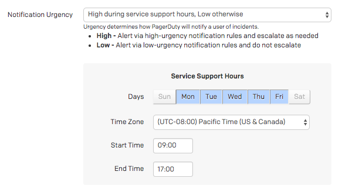

Alerting Principles
We manage how we get alerted based on a simple principle, an alert is something which requires a human to perform an action. Anything else is a notification, which is something that we cannot control, and for which we cannot make any action to affect it. Notifications are useful, but they shouldn't be waking people up under any circumstance.
Alert Priority#
High Priority Alerts
Anything that wakes up a human in the middle of the night should be immediately human actionable. If it is none of those things, then we need to adjust the alert to not page at those times.
| Priority | Alerts | Response |
|---|---|---|
| High | High-Priority PagerDuty Alert 24/7/365. | Requires immediate human action. |
| Medium | High-Priority PagerDuty Alert during business hours only. | Requires human action within 24 hours. |
| Low | Low-Priority PagerDuty Alert 24/7/365. | Requires human action at some point. |
| Notification | Suppressed PagerDuty Event. | No response required. Informational only. |
If you're setting up a new alert/notification, consider the chart above for how you want to alert people. Be mindful of not creating new high-priority alerts if they don't require an immediate response, for example.
Priority Examples#
"Production service is failing for 75% of requests, automation is unable to resolve."_#
This would be a High priority page, requiring immediate human action to resolve.

"Production server disk space is filling, expected to be full in 48 hours. Log rotation is insufficient to resolve."#
This would be a Medium priority page, requiring human action soon, but not immediately.

"An SSL certificate is due to expire in one week."#
This would be a Low priority page, requiring human action some time soon.

"A deployment was successful."#
This would be a Notification, and should be sent as a suppressed event. It provides useful context should an incident occur, but does not require notifying a human.

Alert Content#
We should ensure that alerts contain enough useful context to quickly identify the issue and any potential remediation steps. Alerts with generic titles or descriptions are not useful and can cause confusion. We have a set of guidelines for the content of alerts, which all our alerts should follow,
Make the title/summary descriptive and concise.#
- ✘ ALERT: Something went wrong.
- ✓ Disk is 80% full on
prod-web-loadbalancer-af5462ce.
Make sure to include the metric which triggered the alert somewhere in the body.#
- ✘ Diskspace on a disk is filling.
- ✓
avg(last_1h):max:system.disk.in_use{env:prod-web-loadbalancer} by {host} > 0.8
The body should also include a description of what the actual problem is, and why it's an issue.#
- ✘ Disk is full.
- ✓ The disk on this host is at 80% capacity. If it becomes too full it could cause system instability as new files will not be able to be created and current files will not be written to.
Provide clear steps to resolve the problem, or link to a run book. Alerts with neither of these things are useless.#
- ✘ Fix it by deleting stuff.
- ✓ Follow the run book here for identifying and resolving disk space issues: https://example.com/runbook/disk. Additionally, you should investigate whether log rotation thresholds are sufficient to prevent this happening again, the following run book has the necessary steps: https://example.com/runbook/log-rotate
Testing Your Alerts#
Testing is Critical
An alert you haven't tested is equivalent to not having an alert at all. You cannot be sure it will alert you when the time comes. Testing that your alerting actually works is critical to proper service health, and should be included in any release planning / deployment efforts.
Make sure to test all alerts that are added. This is usually covered as part of Failure Friday for any new service, however you should manually test them if you need it more quickly. Some things to test,
- Test that the threshold is set appropriately. We don't want noisy alerts.
- Test that you get alerted for the "No Data" condition if applicable. Generally, receiving no data is the same as breaking your threshold.
- Test that the alert resolves automatically when the metric returns to normal.